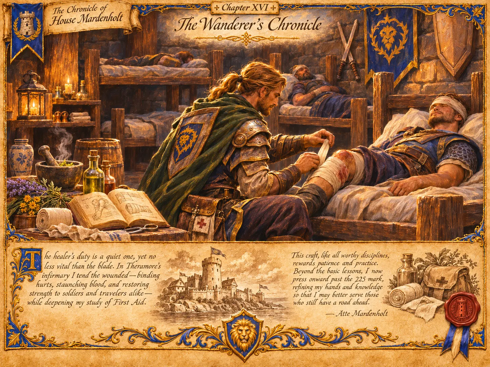

THE OATH OUTLIVES THE CROWN
THE CHRONICLES / WANDERER'S CHRONICLE 2.0
PUBLISHED CHRONICLE · VISITOR EDITION
THE CHRONICLES OF SER ATTE MARDENHOLT
The Wanderer's Chronicle.
A living record of roads traveled, battles fought, companions met, and the oath that outlives every crown.

THE LATEST ILLUSTRATED MEMORYTHE LIVING LIBRARY
Choose your next chapter.
Search the roads of Azeroth, or return to where you left off.
All chapters and illustrations come from the published Chronicle.
0 chaptersBOOKMARK THE ROADS YOU WANT TO REVISIT
No chapters match this search, or the published Chronicle is unavailable. Try another name or location.